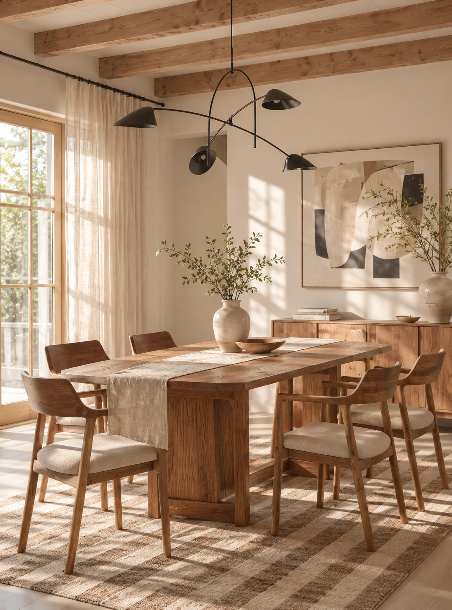
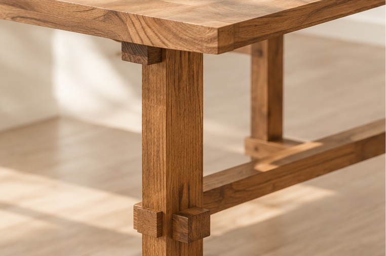
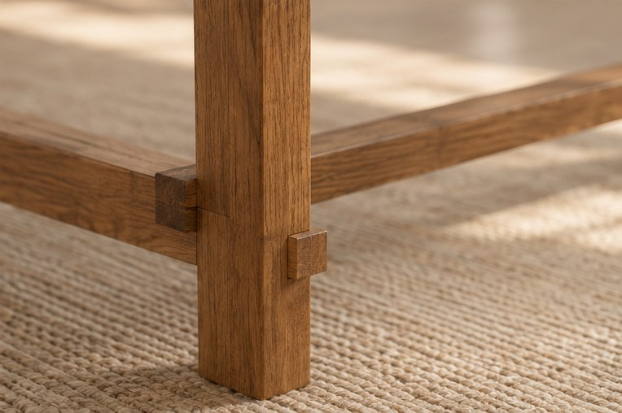

OUR STORY
결, 나무가 자라 온
시간의 무늬
‘결’은 나뭇결이자 살결, 마음결입니다. 우리는 소재를 감추지 않고, 사람의 손으로 마감하며, 오래 쓸수록 깊어지는 가구를 만듭니다.
- 바탕수종과 산지, 마감재를 모두 밝힙니다.
- 손제품마다 만든 장인의 이름과 제작일을 새깁니다.
- 시간구조는 평생 보증하고, 필요할 때마다 다시 칠해 드립니다.
- 비례한국의 거실과 침실 치수에 맞춰 설계합니다.

OUR STORY
‘결’은 나뭇결이자 살결, 마음결입니다. 우리는 소재를 감추지 않고, 사람의 손으로 마감하며, 오래 쓸수록 깊어지는 가구를 만듭니다.
01 / 03
결이 곧고 옹이가 건강한 원목만 고릅니다. 수종과 산지, 마감재까지 숨김없이 밝힙니다.
02 / 03
오일과 왁스로 손마감해 결을 그대로 살리고, 제품마다 만든 장인의 이름과 제작일을 새깁니다.
03 / 03
짜맞춤 구조는 평생 보증하고, 첫 1년은 생활 흔적을 무상으로 다시 다듬어 드립니다.




PROCESS
나무 한 그루가 한 가족의 식탁이 되기까지, 서두르지 않고 다섯 번 손을 거칩니다.


결이 곧고 옹이가 건강한 원목을 고릅니다.
나무가 제자리를 잡을 때까지 천천히 건조합니다.
철물을 줄이고 나무끼리 맞물리게 짜 맞춥니다.
오일과 왁스로 손마감해 결을 그대로 살립니다.
배송과 설치까지 직접 맡습니다.
SHOWROOM
집처럼 꾸민 쇼룸에서 가구를 직접 써 보세요. 유리창 너머로 마감 작업을 볼 수 있고, ‘결 라이브러리’에서 원목 샘플을 만져 볼 수 있습니다.
원하시는 날짜와 시간을 남겨 주시면 확인 후 연락드립니다.